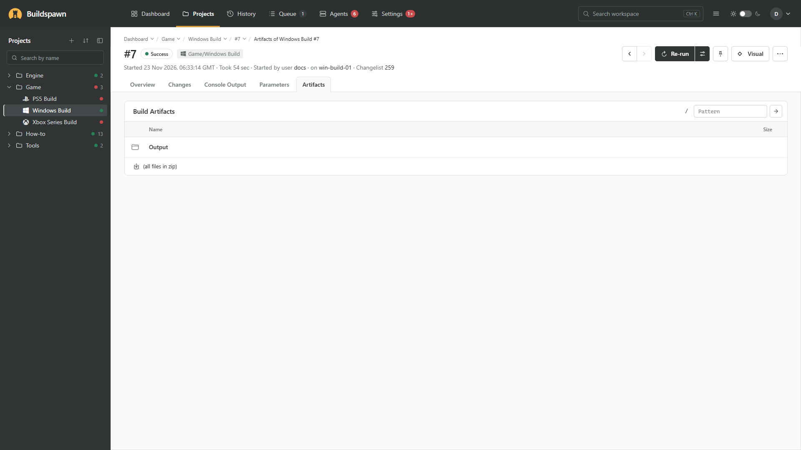

Download artifacts
Get the files a build kept, such as a game package or symbols: one file, a whole folder as a zip, or the files of the last good build from a script.
Before you start
- The build kept files. A build configuration keeps files with the Archive the artifacts post-build action and a pattern such as
Output/**. Builds that kept files have an Artifacts tab. - You can see the project (Project viewer role or more).
- The build still exists. Clean-up rules delete artifacts together with their build. Pin a build to keep it.
Steps
Download one file
- Open the build, for example Game / Windows Build #7.
- On the Overview tab, the Build Artifacts card lists the files. Click the download arrow beside a file. view shows a text file in the browser.
- Or click the Artifacts tab, click folders to open them, and click a file to download it.

Download everything as a zip
- On the Artifacts tab, click (all files in zip). Or click it on the Overview card.
- Your browser saves
archive.zip.
Download only some files
- On the Artifacts tab, type a pattern in the Pattern box, for example
**/*.pdb, and press the arrow. - Only the matching files are listed. Download them one by one.
Download the files of the last good build from a script
Files have a stable address. The words lastSuccessfulBuild in the address always mean the newest build that passed. Use a user name and an API token:
# PowerShell
$cred = "docs:YOUR-API-TOKEN"
curl.exe -u $cred -O "http://buildserver:8080/job/Game/job/Windows%20Build/lastSuccessfulBuild/artifact/Output/Skyforge-Win64-Development.txt"
# The same build as a zip of every file
curl.exe -u $cred -o archive.zip "http://buildserver:8080/job/Game/job/Windows%20Build/lastSuccessfulBuild/artifact/*zip*/archive.zip"Replace lastSuccessfulBuild with a build number, such as 7, to get a certain build. Personal builds are never taken as last successful. Spaces in names are written %20.
Check it worked
- The file opens, and its size matches the size shown beside it.
- The zip holds the same folders as the Artifacts tab.
Problems and fixes
| Problem | What to do |
|---|---|
| There is no Artifacts tab. | The build kept no files. Check the Archive the artifacts post-build action and its pattern on the build configuration, and read the log for the line that says what was archived. A failed build may not get to that step. |
| The files are gone. | A clean-up rule deleted the build. Pin the builds you need. |
| The script gets a sign-in page. | Send the user name and API token with the request, as in the example. |
| The file is not in the artifacts, but it is in the workspace. | The pattern did not match it. Add it to the pattern. A script can also pass a folder to the pattern with setParameter. See Service messages. |